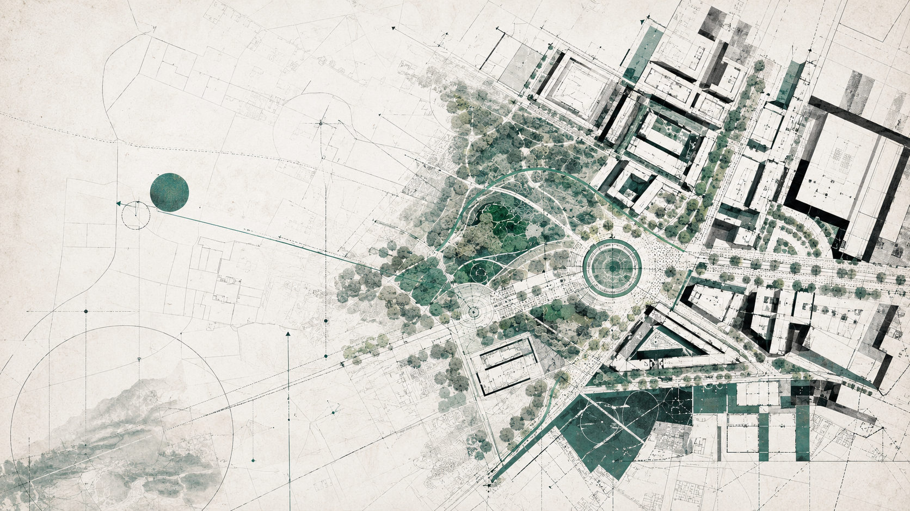
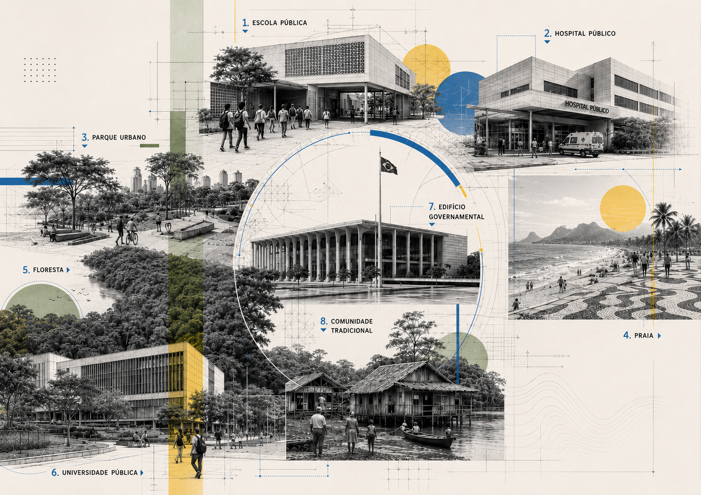
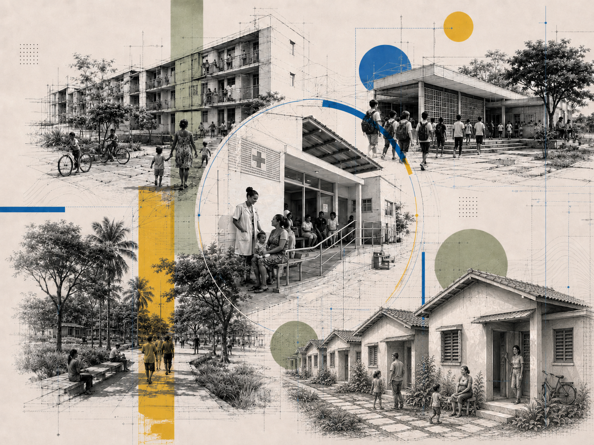
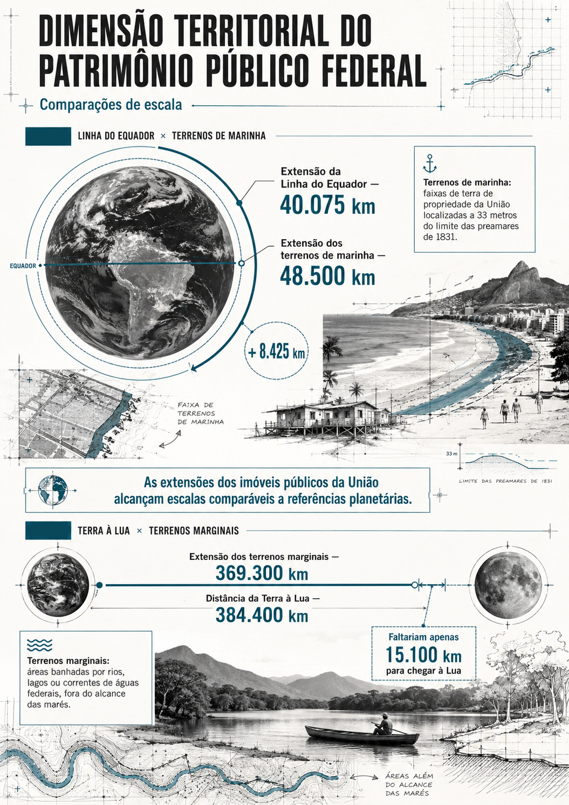
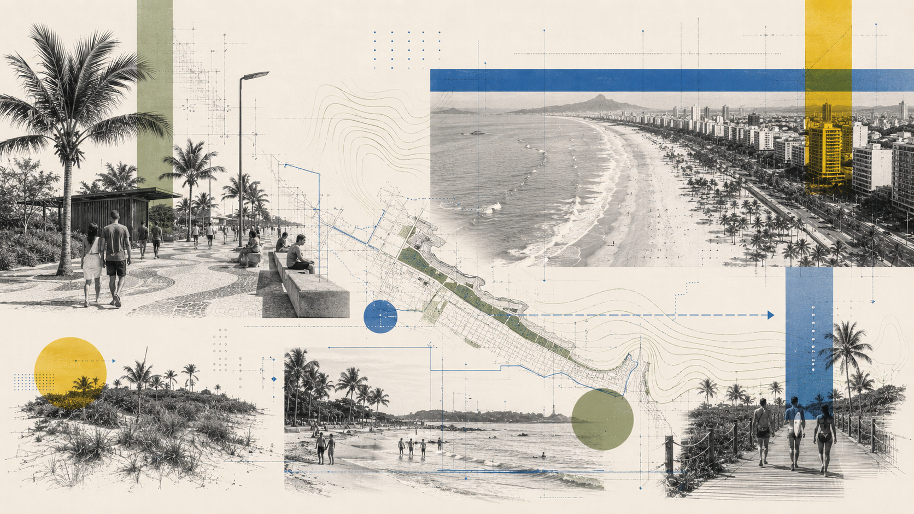
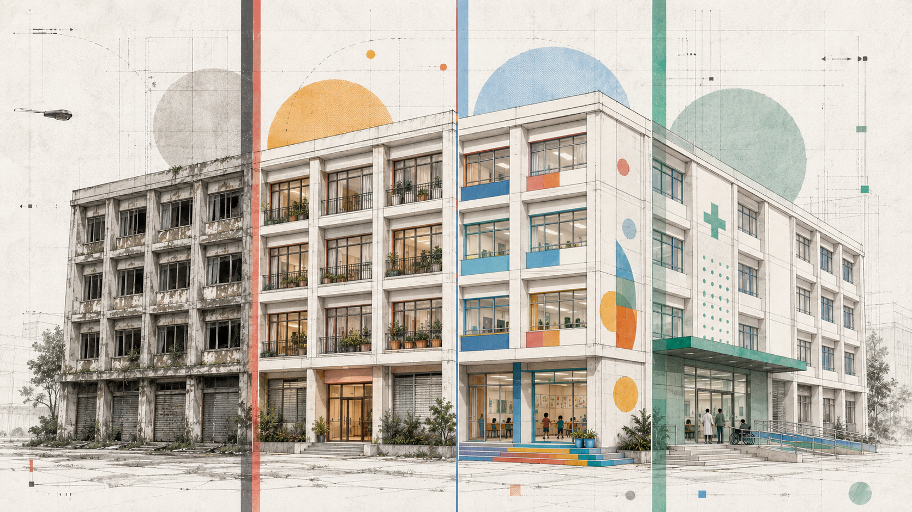

Os imóveis públicos constituem uma das mais importantes infraestruturas do Estado brasileiro. Presentes em cidades, áreas rurais, florestas, rios, ilhas, zonas costeiras e regiões de fronteira, esses bens sustentam a prestação de serviços públicos, viabilizam políticas sociais, protegem ecossistemas estratégicos e contribuem para o desenvolvimento econômico e territorial.
Quando se fala em patrimônio público, é comum que a atenção se concentre em escolas, hospitais, prédios administrativos e equipamentos governamentais. Entretanto, o universo dos imóveis públicos é muito mais amplo. Ele inclui áreas destinadas à conservação ambiental, terras ocupadas por comunidades tradicionais, imóveis utilizados para habitação social, infraestrutura urbana, pesquisa científica, defesa nacional, cultura, lazer e diversas outras finalidades de interesse coletivo.
Mais do que ativos imobiliários, esses bens representam instrumentos permanentes de atuação do Estado sobre o território. Sua relevância não decorre apenas do valor econômico que possuem, mas principalmente da sua capacidade de gerar benefícios para a sociedade.
Entre os diversos patrimônios públicos existentes no Brasil, destaca-se o patrimônio imobiliário da União. Pela sua dimensão territorial, diversidade de tipologias e distribuição em todo o país, ele constitui um dos maiores acervos imobiliários públicos do mundo e oferece um excelente exemplo para compreender a importância estratégica dos imóveis públicos na promoção do desenvolvimento sustentável, da justiça social e da proteção ambiental.

Normalmente, quando se fala em infraestrutura pública, pensa-se em rodovias, portos, aeroportos, sistemas de energia ou saneamento. Existe, contudo, outra infraestrutura igualmente importante: o patrimônio imobiliário público.
Os imóveis públicos constituem a base física necessária para que o Estado implemente políticas públicas e exerça suas funções constitucionais. São eles que permitem construir escolas, hospitais, universidades, parques, unidades de conservação, moradias populares, centros culturais, instalações de segurança pública e inúmeros outros equipamentos indispensáveis ao funcionamento da sociedade.
Por essa razão, os imóveis públicos devem ser compreendidos como uma verdadeira infraestrutura territorial de Estado. Eles oferecem suporte material para a execução de políticas públicas, ajudam a organizar o território e permitem que governos atuem na promoção do desenvolvimento econômico, da inclusão social e da sustentabilidade ambiental.
A experiência da União ilustra bem essa realidade. Seu patrimônio imobiliário compreende centenas de milhares de imóveis distribuídos em todas as regiões do país, abrangendo desde terrenos urbanos até praias, florestas públicas, ilhas oceânicas, terras indígenas e áreas destinadas à administração pública.
Você sabia?
O patrimônio imobiliário da União inclui:
Essa diversidade demonstra que a gestão patrimonial vai muito além da administração de prédios públicos: trata-se da gestão de territórios estratégicos para o desenvolvimento nacional.
Os imóveis públicos possuem uma relação direta com a proteção do meio ambiente. Grande parte deles está localizada em áreas de elevada relevância ecológica, como zonas costeiras, margens de rios, florestas, áreas úmidas, manguezais, restingas e regiões de recarga hídrica.
Essas áreas desempenham funções essenciais para a conservação da biodiversidade, a manutenção dos recursos hídricos, a regulação do clima e a proteção das populações contra eventos extremos.
Por isso, a gestão patrimonial moderna deve incorporar preocupações ambientais em suas decisões. A destinação, utilização ou ocupação de imóveis públicos pode contribuir para preservar ecossistemas, recuperar áreas degradadas, ampliar áreas verdes urbanas e fortalecer a adaptação às mudanças climáticas.
Os efeitos das mudanças climáticas reforçam ainda mais essa importância. Enchentes, secas prolongadas, erosão costeira e elevação do nível do mar afetam diretamente diversos imóveis públicos, exigindo planejamento territorial e ações preventivas.
Nesse contexto, os imóveis públicos deixam de ser apenas objetos de administração patrimonial para se tornarem instrumentos ativos de proteção ambiental e resiliência climática.
O patrimônio da União está diretamente relacionado à gestão de ecossistemas estratégicos.
Atualmente em todo o país.
Aproximadamente.
Muitas dessas áreas estão associadas a imóveis sob domínio da União, contribuindo para:
Curiosidade: 166 milhões de hectares correspondem a uma área maior que muitos países do mundo.
Para finalidades socioambientais, entre 2023 e 2025.
Pelo Programa Imóvel da Gente.
Às destinações realizadas.
Entre 2023 e 2025, o Programa Imóvel da Gente formalizou mais de 1.300 destinações de imóveis da União para finalidades socioambientais.
Essas ações beneficiaram mais de 300 mil famílias por meio de:
O valor patrimonial associado a essas destinações ultrapassa R$ 16 trilhões.

Embora frequentemente associados a custos de manutenção, os imóveis públicos também possuem enorme relevância econômica.
Eles representam ativos de elevado valor patrimonial e funcionam como suporte para atividades essenciais ao desenvolvimento do país. Rodovias, portos, aeroportos, sistemas de energia, saneamento e telecomunicações dependem da existência de áreas públicas adequadamente destinadas.
A gestão patrimonial moderna busca maximizar esse valor público, promovendo usos capazes de gerar benefícios econômicos, sociais e ambientais simultaneamente.
Áreas públicas são utilizados como suporte para infraestrutura de saneamento, energia, telecomunicações, transporte e logística, setores que respondem diretamente pela competitividade econômica do país. Quando destinados de forma planejada, tornam-se catalisadores do desenvolvimento urbano e regional, estimulando atividades produtivas, atraindo investimentos privados e fomentando cadeias locais de emprego e renda. Essa contribuição não se limita ao uso imediato, mas também envolve a valorização indireta de áreas urbanas e rurais, que passam a receber serviços públicos, regularização fundiária e equipamentos coletivos.

Patrimônio público e desenvolvimento sustentável
A gestão dos imóveis da União possui conexão direta com diversos Objetivos de Desenvolvimento Sustentável (ODS), especialmente:
Isso demonstra como a gestão patrimonial está diretamente relacionada aos grandes desafios contemporâneos.
A gestão dos imóveis públicos ocorre em um ambiente institucional cada vez mais influenciado pelos desafios sociais, ambientais, climáticos e territoriais do século XXI. Questões como mudanças climáticas, déficit habitacional, conservação da biodiversidade, segurança hídrica, transição energética, regularização fundiária e redução das desigualdades passaram a ocupar posição central nas agendas governamentais. Nesse contexto, os imóveis públicos deixaram de ser percebidos apenas como bens administrativos e passaram a ser reconhecidos como instrumentos estratégicos para a implementação de políticas públicas.
Independentemente da esfera de governo (federal, distrital/estadual ou municipal), os patrimônios imobiliários públicos possuem potencial para apoiar uma ampla variedade de programas e iniciativas voltados ao desenvolvimento sustentável. Terras, edifícios, áreas urbanas, imóveis rurais, espaços costeiros e equipamentos públicos podem ser mobilizados para promover inclusão social, proteção ambiental, adaptação climática e desenvolvimento econômico. Assim, a gestão patrimonial passa a dialogar diretamente com políticas setoriais de habitação, meio ambiente, infraestrutura, desenvolvimento urbano, assistência social, cultura, educação e segurança pública.
A relação entre imóveis públicos e políticas ambientais é uma das mais evidentes. Muitos bens públicos localizam-se em áreas ambientalmente sensíveis, como florestas, margens de rios, zonas costeiras, áreas úmidas, manguezais e regiões de elevada biodiversidade. Essas características fazem com que a gestão patrimonial exerça papel relevante na conservação dos recursos naturais e na manutenção dos serviços ecossistêmicos.
Imóveis públicos podem apoiar a criação e consolidação de unidades de conservação, a recuperação de áreas degradadas, a implantação de corredores ecológicos e a proteção de mananciais. Também podem servir de suporte para programas de reflorestamento, restauração ambiental e adaptação às mudanças climáticas.
No âmbito federal, por exemplo, diversos imóveis da União estão associados a políticas de proteção ambiental, especialmente em áreas costeiras, margens de rios federais e florestas públicas. Iniciativas como o Projeto Orla demonstram como a gestão patrimonial pode atuar de forma integrada à conservação ambiental, conciliando proteção dos ecossistemas, ordenamento territorial e desenvolvimento local.

Desenvolvido em parceria entre União, estados e municípios, o Projeto Orla busca ordenar o uso das áreas costeiras brasileiras, conciliando proteção ambiental, atividades econômicas e inclusão social.
Os terrenos de marinha administrados pela União constituem um dos principais instrumentos para implementação dessa política.
A gestão dos imóveis públicos também possui forte conexão com o planejamento urbano e territorial. Cidades brasileiras enfrentam desafios complexos relacionados ao crescimento desordenado, déficit habitacional, ocupação de áreas de risco, escassez de áreas verdes e carência de equipamentos públicos.
Nesse contexto, a disponibilidade de áreas públicas representa um ativo estratégico para qualificar o desenvolvimento urbano. Imóveis públicos podem ser utilizados para implantação de moradias, parques urbanos, escolas, unidades de saúde, equipamentos culturais, sistemas de mobilidade e projetos de requalificação urbana.
Além de viabilizar investimentos públicos, a adequada utilização desses imóveis permite reduzir desigualdades territoriais, fortalecer centralidades urbanas e melhorar a qualidade de vida da população. O patrimônio público torna-se, assim, um elemento estruturador das cidades.
A experiência federal demonstra esse potencial. Programas como o Imóvel da Gente têm utilizado imóveis da União para apoiar políticas habitacionais, regularização fundiária e implantação de equipamentos públicos, contribuindo para o desenvolvimento urbano e a inclusão territorial.

A conexão entre gestão patrimonial e políticas sociais é particularmente importante em países marcados por desigualdades territoriais e fundiárias.
Muitos imóveis públicos encontram-se ocupados por populações de baixa renda, comunidades tradicionais, povos indígenas, quilombolas, pescadores artesanais e outros grupos socialmente vulneráveis. A gestão desses territórios influencia diretamente o acesso à moradia, à segurança jurídica e a diversos direitos fundamentais.
Quando articulada a programas habitacionais e de regularização fundiária, a gestão patrimonial pode transformar passivos fundiários em oportunidades de inclusão social. A destinação de imóveis públicos para habitação de interesse social, por exemplo, contribui para reduzir o déficit habitacional e ampliar o acesso à cidade.
Da mesma forma, a regularização de territórios ocupados por comunidades tradicionais fortalece a proteção cultural, a segurança jurídica e a preservação ambiental associada a esses modos de vida.
No caso da União, programas de destinação imobiliária têm sido utilizados para apoiar a provisão habitacional, a regularização fundiária e a proteção de comunidades tradicionais, demonstrando como a gestão patrimonial pode atuar diretamente na promoção da justiça territorial.
Entre 2023 e 2025, destinações realizadas pela União beneficiaram mais de 300 mil famílias por meio de ações de habitação de interesse social e regularização fundiária.
As mudanças climáticas vêm ampliando a importância estratégica dos imóveis públicos. Enchentes, secas prolongadas, incêndios florestais, erosão costeira e eventos extremos exigem novas formas de planejamento e gestão do território.
Nesse cenário, os imóveis públicos podem desempenhar diferentes funções. Alguns atuam como áreas de proteção ambiental e infraestrutura verde. Outros podem servir como espaços de drenagem urbana, corredores ecológicos ou áreas destinadas ao reassentamento de populações expostas a riscos.
Também existe crescente potencial para utilização de imóveis públicos em projetos de energia renovável, infraestrutura resiliente e soluções baseadas na natureza.
Além das ações preventivas, os imóveis públicos podem desempenhar papel fundamental em situações de emergência. Dependendo de suas características e localização, podem ser utilizados como centros de apoio, abrigos temporários, bases logísticas ou áreas destinadas à reconstrução de comunidades afetadas por desastres.
A experiência recente de eventos climáticos extremos no Brasil tem demonstrado que a gestão patrimonial precisa estar cada vez mais integrada às estratégias de adaptação e resiliência territorial.
A crescente complexidade dos desafios socioambientais exige que a gestão patrimonial seja desenvolvida de forma colaborativa.
A utilização estratégica dos imóveis públicos depende da articulação entre diferentes órgãos governamentais, entes federativos, instituições de pesquisa, organizações da sociedade civil e organismos internacionais. Nenhuma instituição, isoladamente, possui capacidade para enfrentar todos os desafios relacionados ao território.
Além disso, diversas iniciativas ambientais, climáticas e urbanas dependem de fontes de financiamento específicas. Os imóveis públicos podem servir como infraestrutura de suporte para projetos financiados por fundos climáticos, organismos multilaterais e programas de cooperação internacional.
Essa capacidade de articulação amplia o potencial de transformação dos patrimônios públicos e fortalece sua contribuição para o desenvolvimento sustentável.
A gestão patrimonial contemporânea não se restringe ao controle administrativo de imóveis. Trata-se de uma atividade estratégica, diretamente conectada às principais agendas públicas do nosso tempo.
Sejam pertencentes à União, aos estados, aos municípios ou a outras entidades públicas, os imóveis públicos constituem uma infraestrutura territorial capaz de apoiar políticas ambientais, urbanas, habitacionais, climáticas e sociais. Quando geridos de forma integrada, tornam-se instrumentos de transformação do território e de promoção do bem-estar coletivo.
Mais do que administrar bens, a gestão patrimonial contemporânea consiste em gerar valor público por meio do uso sustentável, eficiente e socialmente relevante do patrimônio imobiliário.
As dimensões ambiental, social e econômica dos imóveis públicos estão profundamente interligadas. Um mesmo imóvel pode simultaneamente proteger ecossistemas, apoiar políticas habitacionais, estimular o desenvolvimento econômico e promover segurança jurídica. Essa capacidade de gerar múltiplos benefícios torna o patrimônio público um dos mais importantes instrumentos disponíveis para a atuação do Estado.
A experiência do patrimônio da União demonstra que os imóveis públicos não devem ser vistos apenas como bens administrativos ou ativos financeiros. Eles constituem uma infraestrutura territorial estratégica, capaz de promover inclusão social, conservação ambiental, desenvolvimento econômico e melhoria da qualidade de vida.
Compreender essa dimensão é o primeiro passo para uma gestão patrimonial moderna, integrada e orientada à geração de valor público.
A dimensão social
O patrimônio público também desempenha papel fundamental na promoção da cidadania e na garantia de direitos.
Milhões de brasileiros utilizam diariamente imóveis públicos para estudar, trabalhar, receber atendimento de saúde, praticar esportes, acessar serviços governamentais ou participar de atividades culturais.
Além disso, inúmeros imóveis públicos servem de base territorial para povos indígenas, comunidades quilombolas, pescadores artesanais, ribeirinhos e outras populações tradicionais.
A destinação qualificada desse acervo patrimonial tem o potencial de contribuir de maneira significativa para a redução das desigualdades sociais, funcionando como suporte material para políticas de provisão habitacional, regularização fundiária e implementação de programas estratégicos em territórios urbanos e rurais. Esses bens, quando bem utilizados, viabilizam a instalação de equipamentos comunitários, ampliam a oferta de serviços públicos e fortalecem redes de proteção social.
O uso social do patrimônio imobiliário público também permite enfrentar situações de vulnerabilidade, prevenindo ocupações precárias em áreas de risco, ampliando oportunidades de acesso a direitos básicos e promovendo maior integração entre políticas habitacionais, educacionais, de saúde e de assistência social. Assim, ao servir de alicerce para políticas públicas estruturantes, esse patrimônio público consolida sua função social e contribui para uma sociedade mais justa, inclusiva e sustentável.